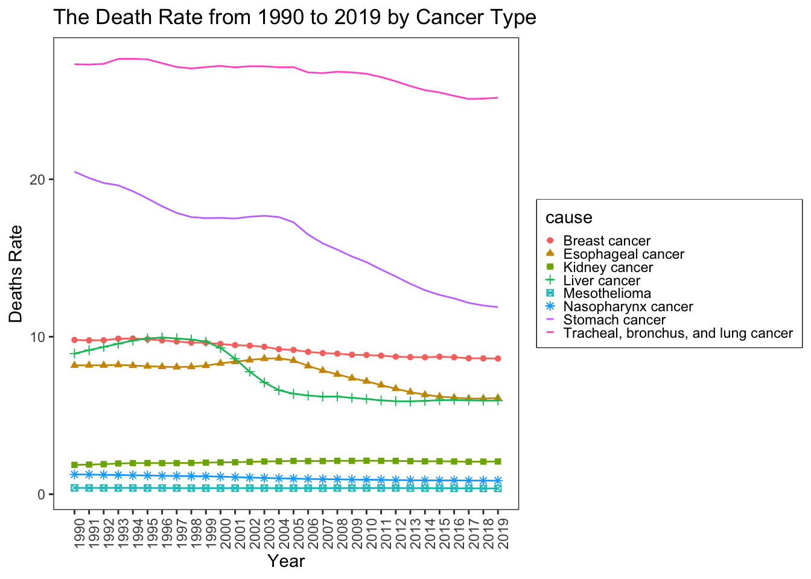

Chapter 5 Results
5.1 The Effect of External Factors on Cancer
The etiology of cancer is very complicated and has not been fully understood. But it has been found that the two major causes of cancer are genetic factors and external factors. While one of the biggest fears of human comes from cancer and people usually feel helpless in the face of cancer, we should realize that keep good life style might significantly reduce our chance of getting some kind of cancer. So below we analyze the effect of external factors on cancer and give potential ways of preventing cancer.
5.1.2 Risk distribution over different types of cancer (1990, 2019)
In the first plot, we can only see external risks as a whole. So, in the second plot above, we further explore what exactly those risks are and how people can do to prevent specific kind of cancer potentially. GHDx defines three major external risks: behavioral risks, environmental/occupational risks, and metabolic risks. From the mosaic plot above, we can see that behavioral risks are the biggest group of risks, and environmental risks are relatively the smallest group. Thus, there is a lot of things human can control to prevent them from having cancer.
None of these cancers have a very even distribution of these three risks. They all bias to some one or two kinds of risks, which correspond to their features and give us suggestions on how we can fight against these cancers.
We notice that cervical cancer, pancreatic cancer and prostate cancer are almost all due to behavioral risks. That means, by controlling our behavior or actively making some changes to our life style, the risk of developing these cancers can be minimized at most. Gallbladder and biliary tract cancer, multiple myeloma, non-hodgkin lymphoma, and uterine cancer are almost all due to metabolic risks. Metabolic risks are basically about physique of people. These risks have already built into the human body. So a better way to guard against these cancer might be to properly deal with these physical problems to avoiding them from hurting their bodies further. Finally, we can see that mesothelioma is almost all due to environmental/occupational risks. It makes sense because we know that it is mostly caused by exposure to asbestos. If people does not live in an environment with high asbestos density, then risk of getting mesothelioma is supper low. For people have to exposure to asbestos, protection is especially important.
Comparing the risk proportion from 1990 to 2019, we can still see that there is not much difference. But we can indeed see that the proportion of metabolic risks increased and the proportion of behavioral risks decreased by a little. This change may indicate human have improved their behaviors to make progress against cancer, but in the mean while, increasing pressure also cause more other physical and metabolic problems that lead to getting cancer.
5.1.3 Death Number and Rate by Risks over the 30 years (1990-2019)

When talking about behavioral risks or metabolic risks, it is still a little bit abstract and general. So, to get an even better understanding of all these risks for cancer, we sum up the data for every year and created a tree map to break down the risk categories into even deeper levels. In the above tree map, the area means the average number of people death from cancer because of the risk stated per year, the color means death rate (number of deaths per 100k people). We can clearly see that tobacco is definitely the most common and dangerous carcinogen. It leads to the largest number of people to die from cancer and has the largest death rate as well. For risks from environment, air pollution and occupational risks are the two major components. So people might want to wear face masks and make good protection against the environmental attack. For metabolic risks, high body-mass index and high fasting plasma glucose are the two main causes. That means people with obesity and high blood sugar need special attention for cancer prevention.
5.1.4 Death Rate by Sex and Age for Different Risks
For this plot, we again pay attention to the three main risk categories. But this time, we focus on people of different sex and age because the cancers that men and women have are very different. First we can see that for babies and kids (age 0 to 14), the death rate of all the risks are 0. That makes sense since kids and babies are very unlikely to have cancer. Even if they have, they have a longer year of life with disability and are extremely unlikely to die before 14 years old. And the same situation holds for teenagers and people of prime. It shows that cancer favors older people.
For age group form 50 to 74 years old, we now can see some variations among male and female and risks. For metabolic risk, the death rates of male and female are almost the same with males’ slightly higher. As for environmental risk, women’s death rate is very close to 0 while men’s death rate is a little more significantly higher. For behavioral risk, the difference between men and women is even more significant.
And this kind of gap is even more obvious among 75 plus elders. Except for metabolic risk where the death rate of both mean are women are much higher than other age groups, death rate of elder women is almost the same as that of 50 to 74 age group, but death rate of elder men is dramatically higher. It indicate that among elders, cancer favors elder men. So men should be more careful about these risks, especially behavioral risk, to reduce their probability of getting cancer, for example, they should think of quit smoking, each more vegeables, and drink less alcohol.
Over the 30 years, environmental risks has always been the leading role of causing cancer, death rate came from metabolic risk increases, while death rate came from environmental risk and behavioral risk started to decrease since 2008. These results all further confirm the conclusion I got from the previous plots.